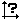
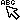
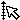
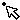
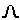
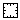
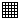
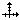
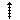
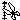

Ngraph で使用するウィンドウを説明します。
Viewer Window グラフが表示されているウィンドウです。マウスによる各種設定ができます Data Window を押すと開かれるウィンドウです。データファイルのパラメタを一覧表示します Axis Window を押すと開かれるウィンドウです。軸のパラメタを一覧表示します Legend Window を押すと開かれるウィンドウです。凡例のパラメタを一覧表示します Merge Window を押すと開かれるウィンドウです。マージするファイルのパラメタを一覧表示します Coordinate Window を押すと開かれるウィンドウです。Viewer Window 上のマウスカーソル位置の1mm単位での座標値を表示します。軸が設定されていれば対応する数値を表示します Information Window を押すと開かれるウィンドウです。フィッティングの途中結果を表示します
メニューの下のコントロールボタンを使って, より効果的にグラフを作成できます。 コントロールボタンではLegend位置のマウスによる入力や評価機能など，メニューにはない機能も割り当てられています。
Data Window を開きます Axis Window を開きます Legend Window を開きます Merge Window を開きます Coodinate Window を開きます Information Window を開きます
データファイルを開きます。メニューの[Data]-[Open]と同じです グラフの開いて読み込みます。メニューの[Graph]-[Load graph]と同じです グラフを保存します。メニューの[Graph]-[Save graph]と同じです  軸の設定をクリアします。メニューの[Axis]-[Scale clear]と同じです Viewer Window を消去し, 新たにグラフの描画を行います。その際, ファイルの選択を行わずに, 全設定データファイルの描画を行います Viewer Window を消去します。メニューの[ビューア]-[描画]と同じです グラフを印刷します。メニューの[グラフ]-[印刷]と同じですが、ファイルの選択ダイアログは表示されません グラフをプレビューします。メニューの[出力]-[外部ビューア]と同じですが、ファイルの選択ダイアログは表示されません 変換数式を複数のデータファイルにまたがって入力します 各軸の min, max, inc の設定を自動的に保存されている履歴に従って元に戻します
Viewer Windowで使用可能なコントロールボタン
次のボタンは Viewer Window でのマウス操作モードを設定します。
軸と凡例の選択, パラメタの変更をします。  凡例の選択, パラメタの変更をします。軸を選択することはできません。  軸の選択, パラメタの変更をします。凡例の選択をすることはできません。  データ点をクリックして、プロットパラメタを変更します。 直線・矢印を作成します。複数作成したいときは SHIFT キーを押しながらボタンを押してください。 曲線を作成します。複数作成したいときは SHIFT キーを押しながらボタンを押してください。 閉多角形を作成します。複数作成したいときは SHIFT キーを押しながらボタンを押してください。 矩形を作成します。複数作成したいときは SHIFT キーを押しながらボタンを押してください。 円・楕円を作成します。複数作成したいときは SHIFT キーを押しながらボタンを押してください。 データプロット形式 "mark"に対応するマークを作成します。複数作成したいときは SHIFT キーを押しながらボタンを押してください。 テキストを作成します。複数作成したいときは SHIFT キーを押しながらボタンを押してください。  ガウス関数, ローレンツ関数, 放物線, 正弦曲線を作成します。作成した曲線はただちにレジェンド-曲線に展開されるので, 一度作成すると関数としての変更はできません。複数作成したいときは SHIFT キーを押しながらボタンを押してください。  フレームグラフを作成します。複数作成したいときは SHIFT キーを押しながらボタンを押してください。  方眼グラフを作成します。複数作成したいときは SHIFT キーを押しながらボタンを押してください。  交差グラフを作成します。複数作成したいときは SHIFT キーを押しながらボタンを押してください。  単独の軸を作成します。複数作成したいときは SHIFT キーを押しながらボタンを押してください。  指定した範囲に軸の最大・最小をトリミングします マウスで指定した範囲内のデータ点の値を表示します。値の表示後, それらデータ点をマスクすることもできます グラフの表示を拡大縮小します。マウス左ボタンで拡大、右ボタンで縮小します。SHIFTキーを押しながらマウスボタンを押すと、センタリングツールになります
Data Window, Axis Window, Legend Window, Merge Window のパラメタ一覧ウィンドウでは...
- 左ボタンクリックでフォーカスします。
- 左ボタンのダブルクリックでダイアログボックスをオープンします。
- 右ボタンでポップアップメニューが現れ、各種操作が行えます。
- いくつかのパラメタについては、選択されている行のカラムをクリックす るか、カーソルをそのカラムに移動して Shift + Enter でダイアログを 開かずに、直接設定の変更が出来ます。
グリッド： Viewer Windowでは，凡例や軸の新規作成, 移動はグリッドに沿って行われます。
- グリッドの大きさは [設定]-[ビューア] で行います。
- SHIFTキー押下中はグリッドが解除されます。
オブジェクトの選択
- Viewer WindowでLegendや軸の選択を行うときには選択したいグラフィックス オブジェクトに有ったマウスモードを選び(コントロールボタン のいずれかを選 びます)、マウスでクリックするか、囲むようにして選択します。
- Viewer WindowでLegendや軸の選択を行うときに、それらが込み合っていてマ ウスでの個別選択が困難な時には、Legend Window、Axis Windowで選択した いオブジェクトを選び[Space]を押します(あるいはポップアップメニューを 出して"Focus"メニューを選びます)。すると、対応するグラフィックスオブ ジェクトがViewer Window上で選択状態になります。SHIFT キーを押しなが ら [SPACE] を押すことで複数のオブジェクトを選択状態に出来ます。
複数点からなる凡例の作成
- レジェンドの line, curve, polygon の作成： 複数の点をマウスで指定します。
- 作成を終了： 左ボタンをダブルクリックします。
- ひとつ前の点の入力に戻る： 右ボタンをクリックします。
- 凡例の作成後はマウスモードが直前に選択されていたオブジェクト選択モー ドになります。複数の凡例を一度に作成したい場合は SHIFT キーを押しな がらコントロールボタンを選択することで、凡例の作成後もマウスモード が変わらなくなります。
いくつかのダイアログボックスの数値入力では数式を用いることができます。
例えば軸ダイアログボックスの「増分」に PIを入力すれば 3.141592653589793e+00 が入力されます。